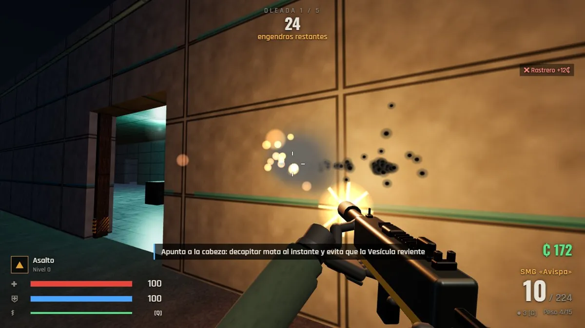
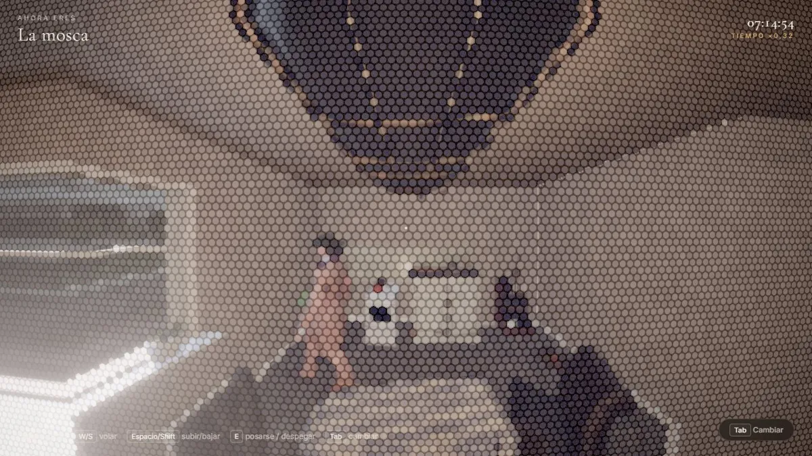
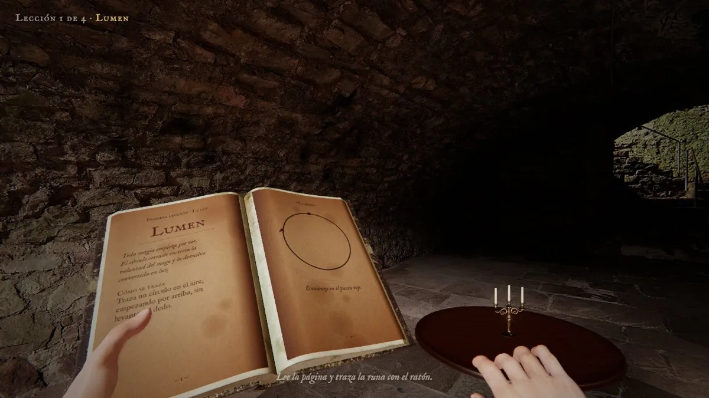
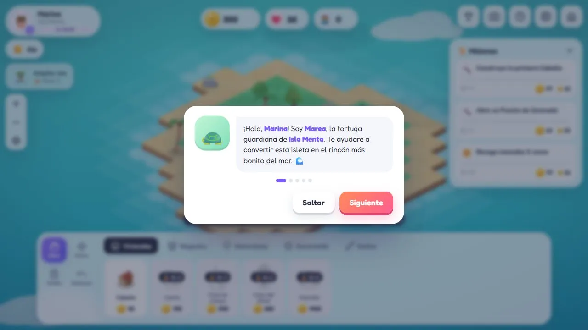
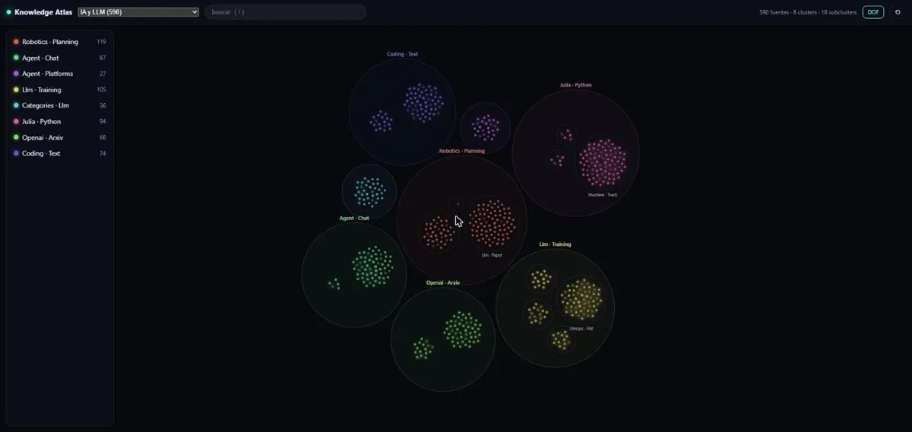

CENIZA: Protocolo Bastión
Shooter de supervivencia por oleadas en primera persona, con arte, sonido y música procedurales.
Soy Pepe Alvar. Hago juegos que se juegan en el navegador, herramientas y cosas que se ven en 3D.

Shooter de supervivencia por oleadas en primera persona, con arte, sonido y música procedurales.

Estrategia en tiempo real con colonias de hormigas: excava, cría castas, investiga y conquista.

Una cocina y la misma mañana, vivida desde 34 percepciones distintas.

Lanza magia trazando runas en el aire dentro de una cripta.

Construye y decora tu propia isla. También en el móvil.

Shoot'em up de 8 bits con 7 zonas, 8 jefes y música generada por código.

Plantilla MIT de parkour en tercera persona para empezar tu propio juego.

3.500 fuentes OSINT en un grafo fractal.

Cinco grafos: IA, algoritmos, estándares web, datasets y juegos.